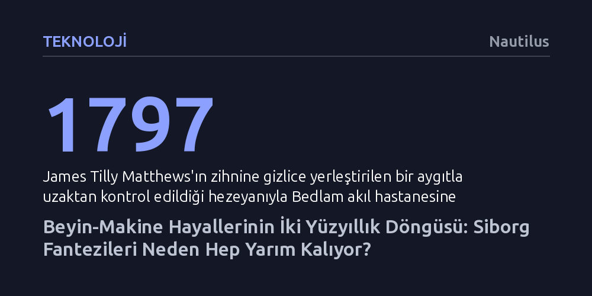

TEKNOLOJI · Nautilus · 2026-10-15
Beyin-makine arayüzleri ve siborg fantezileri yeni değil; iki yüz yıldır bilimsel ilk bulguların popüler kültüre abartılı yansıması ve ardından gelen hayal kırıklıklarıyla yineleniyor. Günümüzün Neuralink ve yapay zekâ ütopyaları da geçmişteki kontrol ve kurtuluş vaatlerinin aynı karmaşık döngüsünü sürdürüyor.
Beyin teknolojilerine dair bugünkü heyecan ve korkuların devrimsel bir yenilik değil, iki yüzyıldır aynı bilimsel yanılsamalarla tekrarlanan kültürel bir döngü olduğunu gösterir.

Bugün Elon Musk'ın Neuralink projesi veya beyne çip yerleştirme girişimleri konuşulduğunda, çoğunlukla yepyeni ve eşi benzeri görülmemiş bir geleceğin eşiğinde olduğumuz varsayılıyor. Oysa kültür tarihçisi Mike Jay'in ortaya koyduğu tablo bambaşka bir gerçeğe işaret ediyor: İnsan zihninin manyetik ya da elektronik aygıtlarla yönlendirilebileceği, kontrol altına alınabileceği veya insana olağanüstü güçler kazandırabileceği fikri, sanayi devriminin başlangıcından bu yana kesintisiz biçimde üretilmeye devam ediyor.
Bu tasavvurun somut başlangıcı 1797 yılına, Londra'daki ünlü Bedlam akıl hastanesine yatırılan James Tilly Matthews'a kadar uzanıyor. Matthews, siyasi ajanların beynine gizlice yerleştirdiği bir mıknatıs üzerinden zihnini yönlendiren 'hava dokuma tezgâhı' adını verdiği bir makinenin varlığına inanıyordu. Matthews'ın hezeyanları, aradan geçen iki yüzyıla rağmen 1980'lerde ve günümüzde geliştirilen beyin teknolojisi tartışmalarının neredeyse birebir kurgusal bir öncülü niteliğindedir.
Jay'e göre beyin teknolojilerine dair tahayyüllerimiz daima belirsiz bir geleceğe erteleniyor. Bu aygıtlar ya zihnimizi ele geçirecek distopik bir kontrol mekanizması ya da insanı kusursuzlaştıracak ütopik bir kurtarıcı olarak konumlandırılıyor. Ancak gerçekte yaşanan, bilimsel sınırların ve kurguların birbirini besleyerek sürekli başa sardığı döngüsel bir yanılsamadan ibarettir.
Laboratuvardaki araştırmacıların niyetleri ile toplumun bu teknolojileri karşılama biçimi arasında tarih boyunca derin bir uçurum oluştu. 1950'ler ve 1960'larda José Delgado, Robert Heath ve James Olds gibi öncüler, hayvanların ve insanların beyinlerine elektrotlar yerleştirerek davranışları yönlendirme deneyleri yürüttüler. Bilim insanları bu çalışmaları insanlığı şiddetten arındıracak, rasyonel aklı ve medeniyeti yüceltecek ilerici ve insani bir misyon olarak görüyordu.
Fakat kamuoyunun tepkisi beklenenin tam aksi oldu. Dışarıdan bakan geniş kitleler, araştırmacıların vadettiği zihinsel iyileşmede bir özgürleşme değil, otoriter bir kontrol ve bireysel iradenin gasbı tehlikesini sezdi. Soğuk Savaş ikliminde askeri amaçlarla gelişen sibernetik araştırmalar, 1960'ların karşı-kültür hareketinde bilinci genişletme vaadine evrilse de halkın bu tür müdahalelere duyduğu derin kuşku hiçbir zaman kaybolmadı.
Benzer bir süreç 'haz merkezleri' teorisinde de yaşandı. Beynin belirli bölgelerine elektrik verilerek yapay haz üretilebileceğine dair erken nörolojik gözlemler hızla popüler kültüre taştı. 1970'lerde bu elektriksel uyarımın bağımlısı haline gelecek kişileri tanımlamak için ortaya atılan 'wirehead' kavramı bilimkurgu anlatılarını şekillendirdi. Bilim zamanla beynin bu denli basit ödül düğmelerine sahip olmadığını gösterse de popüler kültürdeki zihinsel bağımlılık miti varlığını korumayı başardı.
Beyin cihazlarının aşkınlık vaadinin en somut örneklerinden biri, Kanadalı psikiyatrist Michael Persinger'ın geliştirdiği ve basında geniş yankı uyandıran 'Tanrı kaskı' deneyiydi. Şakak lobu epilepsisi geçiren bir hastanın nöbet sırasında yaşadığı mistik deneyimlerden yola çıkan Persinger, kar motosikleti kaskına elektromanyetik bobinler ekleyerek zayıf akımlarla beynin temporal loblarını uyardı. Loş odalarda bu kaskı takan deneklerin ilahi bir varlığın mevcudiyetini hissettiği iddia edildi ve dönemin popüler bilim yayınları beynin maneviyat noktasının bulunduğunu ilan etti.
Ancak bu görkemli iddia nesnel bilimsel testlere dayanamadı. Başka laboratuvarlar sonuçları tekrarlamayı başaramadı. İsveç'te yürütülen çift kör bir çalışmada ise kaskın manyetik akımı tamamen kapalıyken bile deneklerin aynı mistik varlık hissini yaşadığı kanıtlandı. Ortadaki durum teknolojik bir atılım değil, katılımcıların beklentilerinden kaynaklanan klasik bir plasebo etkisinden ibaretti.
Bir dönem nöroteoloji tartışmalarının merkezinde yer alan ve bilim dünyasını meşgul eden bu kask, on yıl içinde tavan aralarına kaldırılan unutulmuş bir deneye dönüştü. Tıpkı önceki örneklerde olduğu gibi, teknoloji eliyle aşkın deneyimler yaratma girişimi, laboratuvarın soğukkanlı gerçekliği karşısında kültürel bir heves olarak tarihe karıştı.
Günümüzde beyin aygıtlarına dair tüm söylemin neredeyse yalnızca Neuralink'e ve yapay zekâ ütopyalarına indirgenmesi, geçmişteki dar bakış açısının sürdüğünü gösteriyor. Jay, Silikon Vadisi merkezli teknofütürizmin büyük ölçüde genç ve erkek bir elit kesimin grup düşüncesiyle şekillendiğine dikkat çekiyor. Bu yaklaşım; insan ilişkilerini, toplumsal yapıları ve çevresel sorunları göz ardı eden iki boyutlu, yüzeysel bir gelecek tasarımı dayatıyor.
İnsanların teknolojiyle kurduğu eleştirel olmayan bağ, vadedilen kurtuluşun aksine güçlüleri daha güçlü, kırılganları ise daha bağımlı hale getiriyor. Yazarın hatırlattığı Marshall McLuhan tespiti bu açmazı özetliyor: "Teknolojilerimizle eleştirel bir mesafe koymadan ilgilendiğimizde hepimiz birer robota dönüşürüz." Gün boyu ekranlara tıklarken ya da yaratıcı ve zihinsel süreçleri toptan yapay zekâya devrederken asıl riski, kendi eylemliliğimizi makinelere terk ederek biz yaratıyoruz.
Beyin-makine teknolojilerinin iki yüz yıllık serüveni, geleceğin ne kusursuz ütopyalardan ne de mutlak felaketlerden oluştuğunu gösteriyor. Teknolojik dönüşümler hızla sıradanlaşırken geride daima amaçlanan hedeflerden sapmış, karmaşık ve eksik kalmış projeler bırakıyor. Dolayısıyla teknoloji devlerinin sunduğu tek tip anlatılara teslim olmak yerine, geleceği daha çoğulcu ve eleştirel bir yaklaşımla düşünmek gerekiyor.